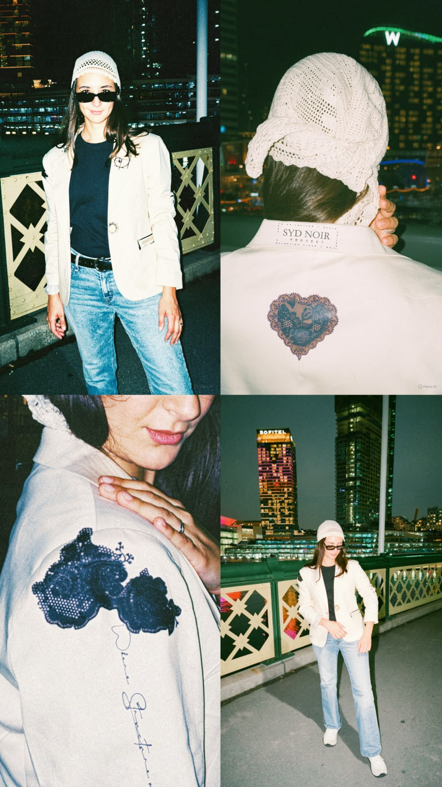
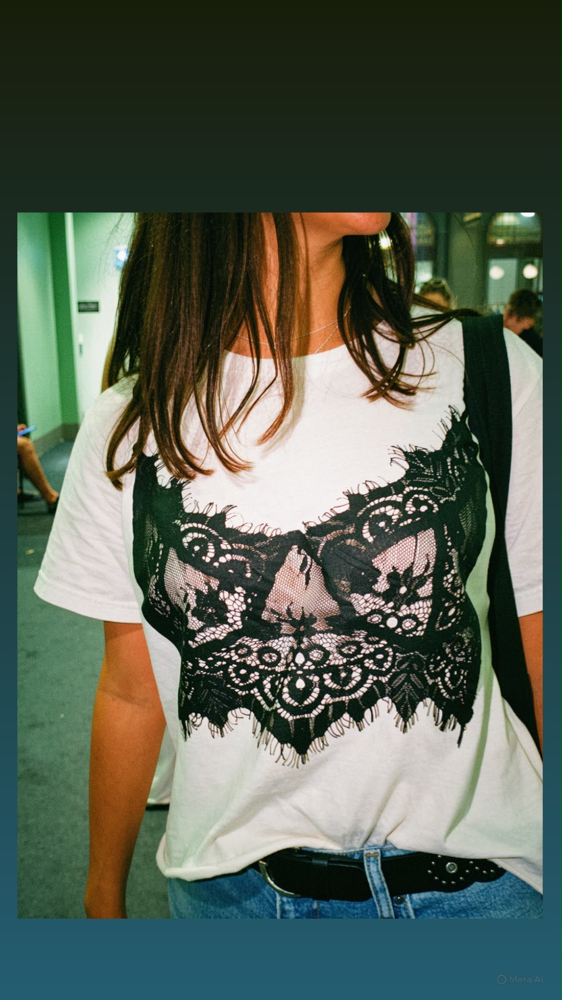
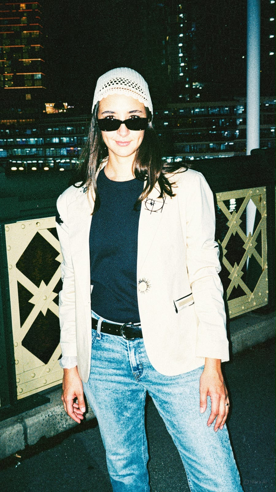

Proyecto Personal
SYD NOIR
"Diseño conceptual y exploración creativa"

Concepto de Marca
SYD NOIR PROJECT nace como un proyecto personal de experimentación en diseño de indumentaria. Inspirado en la estética urbana de Sídney, explora la relación entre diseño, identidad y producción en pequeñas series.
Objetivo: Explorar el diseño como herramienta para construir una identidad contemporánea.
Mi Rol: Diseño integral de marca, colección, estampas y desarrollo técnico.

